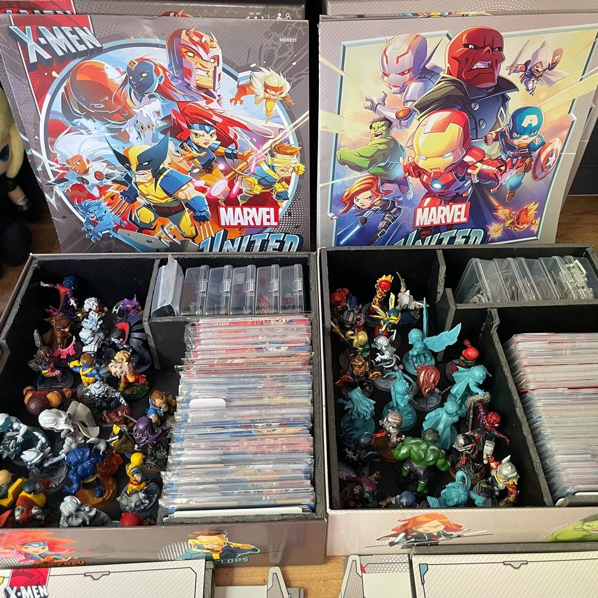
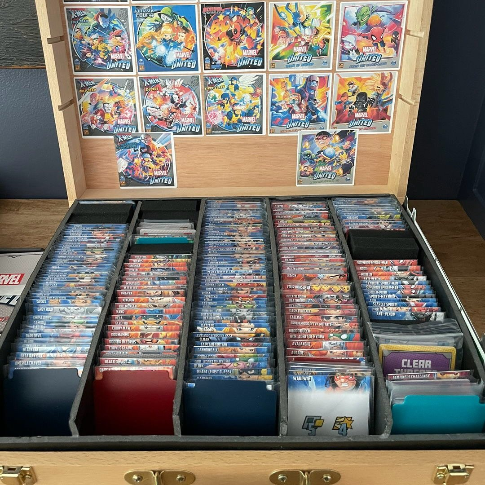
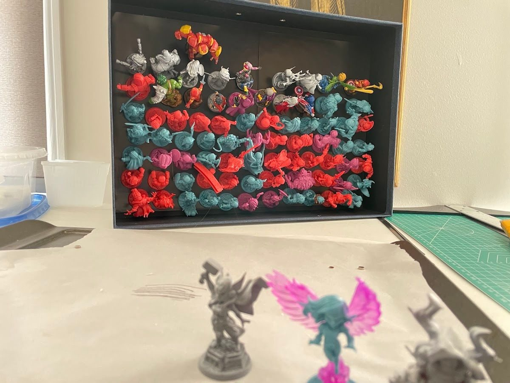

Marvel United has a lot of content: core boxes, expansions, promo packs, hundreds of minis and even more cards. This is the system I landed on, and it's basically still how I store everything today.
What I was optimizing for
In order:
- Easy setup and transport for a basic game.
- Easy setup when I want expansion content.
- Looking good on my office shelf.
That order matters. If a system looks great but makes setup slow, the games don't get played.
The short version
Three core boxes are "grab and go" kits, one per season, each with everything needed for a full game. Expansion cards are filed in card boxes so you can find anything fast. Numbered blue boxes hold the rest of the minis, with a key inside each lid that says who's where.
Part 1: grab-and-go core boxes
Each season's core box is set up so I can grab one and play.
- A custom foam insert holds about two to three times more characters (minis plus cards) than the original insert.
- Everything for a full game lives in the box, including tokens and mission cards.
- A curated roster: a variety of my favorite heroes, villains and locations from that season, not just the ones that came in the box.
- A magnetic storage section keeps the minis from colliding in transit.

Part 2: expansion cards, filed and labeled
When I first set this up, all the expansion content lived in one wooden case. I've since moved the cards into card boxes that sit inline with everything else, but the filing idea is the same.
- Cards stand vertically in deck bags for quick access.
- Each deck bag is labeled with the number of the mini box where that character lives.
- An upper tray holds locations and villain dashboards.
- Box cover stickers on the lid, because it should be fun too.

Part 3: numbered blue boxes for minis
- Magnets now, foam originally. The first version had foam spaces sized to each character. The boxes are magnetized now (see how I magnetized about 200 minis).
- A number on the outside of each box
- A key inside each lid with the character locations in that box
The trick that ties it together is the cross-reference: a card bag says "box 4," box 4's lid says where the mini is. No digging.

Borrow the ideas, not the exact setup
You don't need this exact gear for any game with a lot of content:
- Build "grab and go" kits for the way you usually play.
- Separate what you always need from what you sometimes need.
- Number everything and write a key. Future you will not remember which box has Moon Knight.
- Cross-reference cards to minis if the game pairs them.
Checklist
- Decide your priorities (setup, expansions, looks)
- One complete kit per "normal" game
- Cards filed vertically and labeled
- Boxes numbered with a key in the lid
- Magnets (or foam) so minis don't collide
Next: magnetize the minis so the boxes can be simpler.